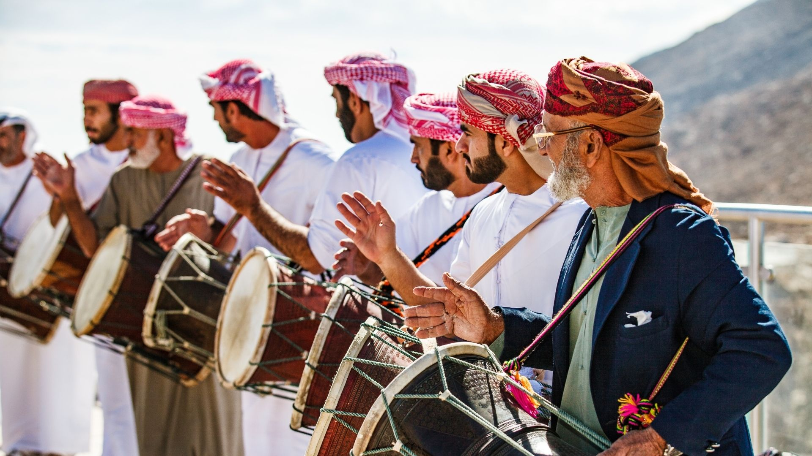

U.A.Q
Umm Al-Quwain is one of the smaller emirates in the United Arab Emirates, covering an area of approximately 750 square kilometers. Its appeal lies in its tranquility, natural beauty, and a lifestyle that offers a peaceful respite from the hustle and bustle of larger cities.
The ruler of Umm Al-Quwain, Sheikh Saud bin Rashid Al Mu'alla, has played a crucial role in preserving the emirate's unique character while enhancing the quality of life for its residents. The emirate boasts pristine beaches along its coastline, offering residents and visitors a serene escape. In addition to its coastal attractions, Umm Al-Quwain is known for its historical sites and archaeological discoveries, shedding light on the region's ancient past.
Despite its smaller size, Umm Al-Quwain is home to modern infrastructure and developments that have contributed to its economic growth and improving living standards. The emirate is a testament to how the United Arab Emirates combines tradition with progress, allowing residents and tourists to explore its rich history while enjoying its natural beauty.